ĐẠI HỌC QUỐC GIA HÀ NỘI
TRƯỜNG ĐẠI HỌC NGOẠI NGỮ

BÁO CÁO CÁ NHÂN
THỰC HÀNH THAO TÁC VỚI TỆP TIN VÀ THƯ MỤC TRÊN WINDOWS
| Sinh viên | Hoàng Chu Mỹ Anh |
|---|---|
| Ngành | Ngôn ngữ Anh |
| Khoa | Ngôn ngữ và Văn hóa Anh |
| Trường | Trường Đại học Ngoại ngữ - ĐHQGHN |
| Mã sinh viên | 25040391 |
| Lớp | VNU1001_E252058 |
1. Thông tin chung và mục tiêu thực hành
Bài báo cáo này trình bày quá trình cá nhân thực hiện các thao tác cơ bản với tệp tin và thư mục trên hệ điều hành Windows thông qua File Explorer. Các thao tác bao gồm: mở File Explorer, truy cập ổ đĩa hoặc thư mục làm việc, tạo thư mục mới, tạo tệp văn bản, đổi tên tệp, tạo thư mục con, sao chép, di chuyển, xóa tệp, xóa vĩnh viễn và khôi phục tệp từ Recycle Bin.
Mục tiêu của bài thực hành là rèn luyện kỹ năng quản lý dữ liệu cá nhân một cách thành thạo, chính xác và có minh chứng rõ ràng. Đây là kỹ năng nền tảng cần thiết đối với sinh viên ngành Ngôn ngữ và Văn hóa Anh khi làm bài tập, lưu tài liệu học tập, quản lý bản dịch, sắp xếp tư liệu nghiên cứu và nộp sản phẩm học thuật.
2. Môi trường thực hiện và quy tắc đặt tên
| Thiết bị thực hiện | Máy tính cá nhân sử dụng hệ điều hành Windows |
|---|---|
| Công cụ sử dụng | File Explorer, Recycle Bin, phím tắt Windows + E, Ctrl + C, Ctrl + V, Ctrl + X, Shift + Delete |
| Vị trí lưu bài | Ổ D:/E: hoặc thư mục Documents nếu máy chỉ có ổ C: |
| Thư mục chính | ThucHanh_HoangChuMyAnh |
| Tệp thực hành | GhiChu.txt, GhiChuQuanTrong.txt, DiChuyen.txt |
Quy tắc đặt tên được áp dụng trong bài là dùng tên rõ nghĩa, không gõ sai chính tả, không đặt tên quá dài và không dùng ký tự đặc biệt gây lỗi trên Windows. Việc đặt tên thống nhất giúp quá trình tìm kiếm, sao chép, di chuyển và khôi phục tệp được dễ kiểm chứng hơn.
3. Quy trình thực hiện và minh chứng cần chèn
Bảng dưới đây tổng hợp toàn bộ các bước thực hành. Khi hoàn thiện bài nộp, sinh viên cần thay các dòng “Ảnh minh chứng” bằng ảnh chụp màn hình thật, thể hiện rõ tên thư mục, tên tệp và thao tác đã thực hiện.
Thực hiện:
Mở File Explorer: Nhấn tổ hợp phím Windows + E hoặc nhấp vào biểu tượng thư mục màu vàng trên thanh tác vụ.
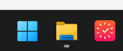
Truy cập ổ đĩa/thư mục: Ở cột bên trái, nhấp vào This PC, sau đó nhấp đúp vào một ổ đĩa không phải ổ hệ thống (ví dụ: ổ D: hoặc E:). Nếu chỉ có ổ C:, hãy vào thư mục Documents.
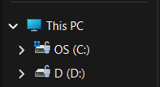
Tạo thư mục mới: Nhấp chuột phải vào một khoảng trống -> chọn New -> Folder. Đặt tên thư mục là ThucHanh_HoangChuMyAnh (ví dụ: ThucHanh_HoangChuMyAnh). Nhấn Enter.
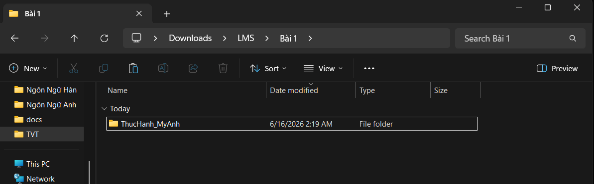
Vào thư mục vừa tạo: Nhấp đúp vào thư mục ThucHanh_HoangChuMyAnh.
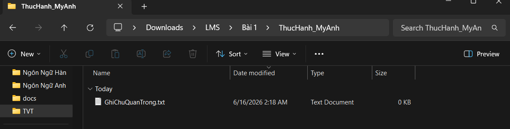
Tạo tệp tin văn bản: Nhấp chuột phải vào khoảng trống -> New -> Text Document. Đặt tên là GhiChu.txt. Nhấn Enter.
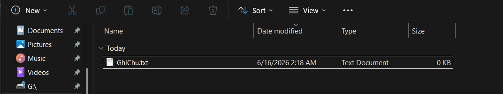
Đổi tên tệp tin: Nhấp chuột phải vào tệp GhiChu.txt -> chọn Rename. Đổi tên thành GhiChuQuanTrong.txt. Nhấn Enter.
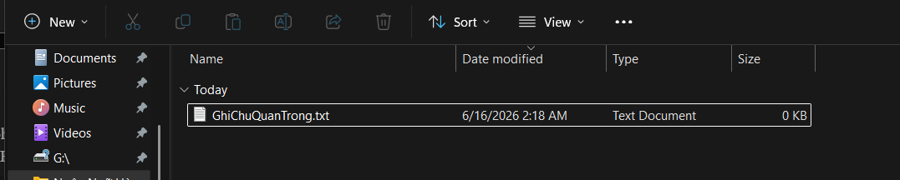
Tạo thư mục con: Trong thư mục ThucHanh_HoangChuMyAnh, nhấp chuột phải -> New -> Folder. Đặt tên là TaiLieu.
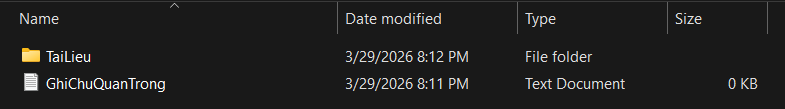
Sao chép tệp tin (Copy & Paste): * Nhấp chuột phải vào tệp GhiChuQuanTrong.txt -> chọn Copy (hoặc chọn tệp rồi nhấn Ctrl + C).
Nhấp đúp vào thư mục TaiLieu, nhấp chuột phải vào khoảng trống bên trong -> chọn Paste (hoặc nhấn Ctrl + V). Bây giờ bạn có một bản sao của tệp trong thư mục TaiLieu.
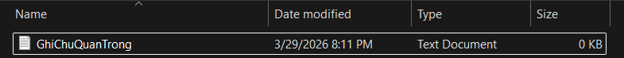
Di chuyển tệp tin (Cut & Paste):
Quay lại thư mục ThucHanh_HoangChuMyAnh. Tạo một tệp mới tên là DiChuyen.txt.
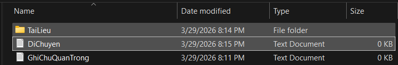
Nhấp chuột phải vào tệp DiChuyen.txt -> chọn Cut (hoặc chọn tệp rồi nhấn Ctrl + X).
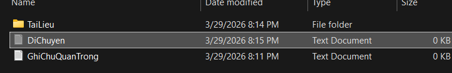
Nhấp đúp vào thư mục TaiLieu, nhấp chuột phải vào khoảng trống -> chọn Paste (hoặc nhấn Ctrl + V). Tệp gốc đã biến mất khỏi vị trí cũ và chỉ còn ở vị trí mới.
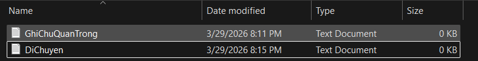
Xóa tệp tin: Trong thư mục TaiLieu, nhấp chuột phải vào tệp GhiChuQuanTrong.txt
-> chọn Delete. Tệp sẽ được chuyển vào Thùng rác (Recycle Bin).
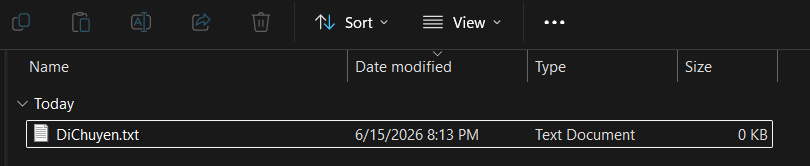
Xóa vĩnh viễn: Chọn tệp DiChuyen.txt, nhấn giữ phím Shift và nhấn phím Delete. Một cảnh báo sẽ hiện ra. Nếu đồng ý, tệp sẽ bị xóa vĩnh viễn mà không qua Thùng rác.
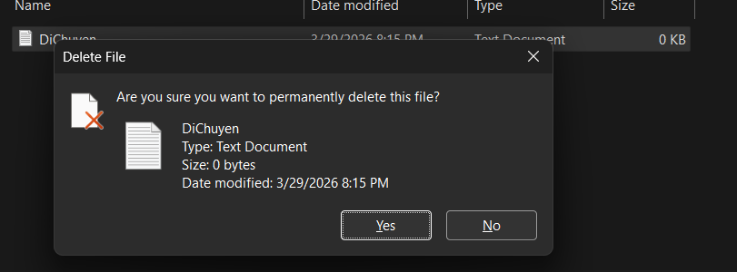
Khôi phục từ Thùng rác (Tùy chọn): Tìm biểu tượng Recycle Bin trên màn hình nền, nhấp đúp để mở. Tìm tệp GhiChuQuanTrong.txt đã xóa, nhấp chuột phải vào nó và chọn Restore. Tệp sẽ quay trở lại vị trí ban đầu.
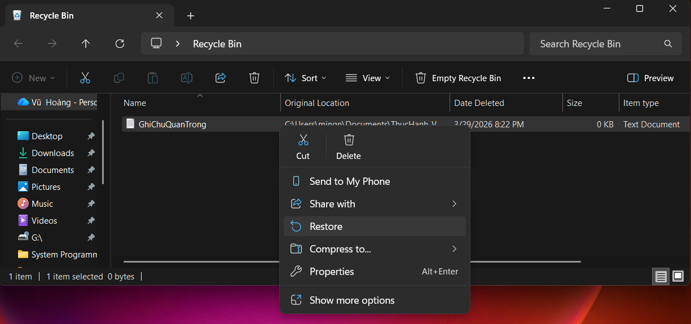
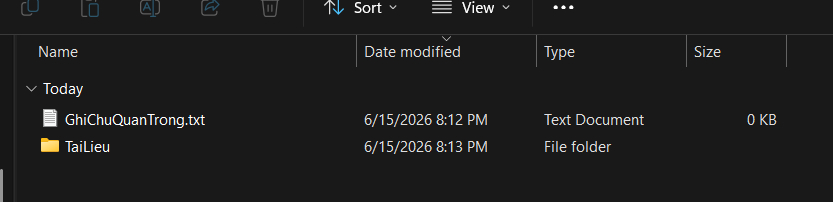
4. Phân tích kết quả thực hành
Sau khi hoàn thành các bước thực hành, tôi nắm được sự khác biệt giữa thao tác trên thư mục và thao tác trên tệp tin. Thư mục có vai trò chứa và phân loại dữ liệu, còn tệp tin là đơn vị lưu nội dung cụ thể. Việc tạo thư mục ThucHanh_HoangChuMyAnh và thư mục con TaiLieu giúp dữ liệu được tổ chức theo cấu trúc rõ ràng thay vì để rải rác trong cùng một vị trí.
Đối với thao tác sao chép và di chuyển, điểm khác biệt quan trọng là Copy & Paste tạo thêm một bản sao của tệp ở vị trí mới, trong khi Cut & Paste chuyển tệp gốc sang vị trí khác. Vì vậy, sau khi sao chép GhiChuQuanTrong.txt vào thư mục TaiLieu, tệp vẫn có thể còn ở vị trí ban đầu. Ngược lại, sau khi Cut & Paste DiChuyen.txt, tệp gốc không còn ở thư mục cũ mà chỉ xuất hiện trong thư mục TaiLieu.
Đối với thao tác xóa, Delete thông thường đưa tệp vào Recycle Bin, nhờ vậy người dùng có thể khôi phục nếu xóa nhầm. Trong khi đó, Shift + Delete xóa vĩnh viễn và không chuyển tệp vào Recycle Bin. Vì vậy, thao tác xóa vĩnh viễn cần được thực hiện cẩn thận, chỉ dùng khi chắc chắn tệp không còn cần thiết.
5. Khó khăn và cách khắc phục
| Khó khăn | Ảnh hưởng | Cách khắc phục |
|---|---|---|
| Dễ nhầm giữa Copy và Cut. | Có thể tưởng đã di chuyển tệp nhưng thực tế chỉ tạo bản sao. | Quan sát lại vị trí cũ và vị trí mới sau mỗi thao tác để kiểm tra kết quả. |
| Dễ đặt sai tên tệp/thư mục. | Minh chứng không khớp yêu cầu hoặc khó kiểm tra. | Gõ đúng tên theo đề bài: ThucHanh_HoangChuMyAnh, GhiChuQuanTrong.txt, TaiLieu. |
| Shift + Delete có thể xóa nhầm vĩnh viễn. | Không thể khôi phục trực tiếp từ Recycle Bin. | Chỉ thực hiện với tệp DiChuyen.txt theo yêu cầu và chụp lại cảnh báo xác nhận. |
| Ảnh chụp màn hình có thể không rõ. | Người chấm khó đọc tên tệp, thư mục hoặc thao tác. | Chụp vùng vừa đủ, giữ tên tệp/thư mục rõ nét, đặt chú thích ngay dưới ảnh. |
6. Kết luận
Qua bài thực hành này, tôi đã rèn luyện được các thao tác cơ bản nhưng quan trọng trong quản lý tệp tin và thư mục trên Windows. Các bước tạo thư mục, tạo tệp, đổi tên, sao chép, di chuyển, xóa và khôi phục giúp tôi hiểu rõ hơn cách tổ chức dữ liệu cá nhân một cách khoa học.
Kỹ năng này có ý nghĩa thực tế đối với sinh viên ngành Ngôn ngữ và Văn hóa Anh vì trong quá trình học tập thường xuyên phải lưu trữ tài liệu đọc, bài dịch, slide thuyết trình, file âm thanh, hình ảnh minh họa và các bản nộp khác nhau. Nếu biết quản lý tệp tin tốt, sinh viên có thể hạn chế thất lạc dữ liệu, tránh nhầm phiên bản và nộp bài đúng yêu cầu.
7. Tài liệu tham khảo
[1] Microsoft Support. File Explorer in Windows. Nội dung tham khảo về cách mở và sử dụng File Explorer trên Windows.
[2] Microsoft Support. Keyboard shortcuts in Windows. Nội dung tham khảo về các phím tắt Windows, bao gồm Windows + E và các thao tác quản lý tệp.